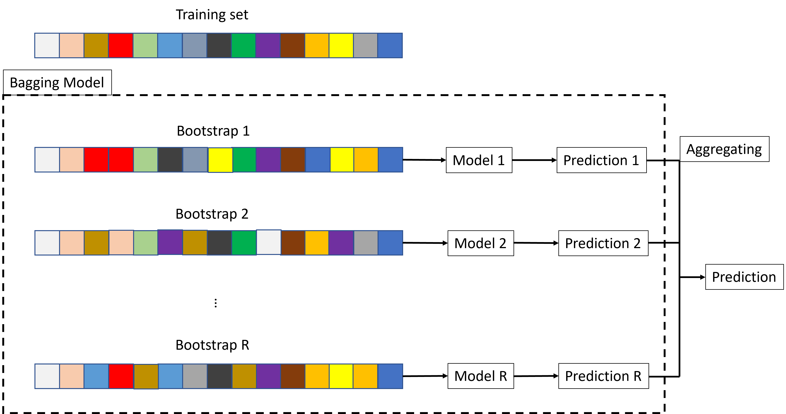
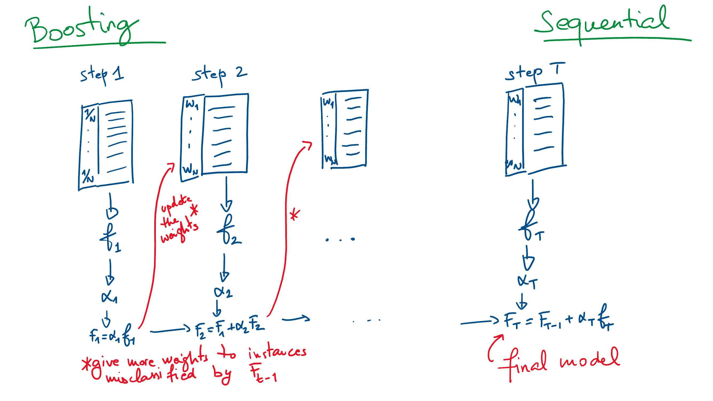

Ensemble Methods
Ensemble and bagging
Ensemble
Until now we have tried to train the best learner among several candidates to solve a given task. On the contrary, an ensemble learner is made of several learners (so called base learners or sub-learners) that are combined for the prediction. Base learners are often simple learners, coming from an homogenous family of learners (e.g. regression trees, regressions, etc.).
Bagging stands for Bootstrap AGGregatING. It is a way to build an ensemble learner from several versions of the same learner, trained on bootstrapped versions of the same training set:
Draw several random samples (with replacement) from the training data set,
For each sample, construct a separate model and separate predictions for your test set.
Averaged these predictions to create a final prediction value.
The objective of the intensive randomization is to built many small uncorrelated learners rather than one unique big learner.

Does it work and why? (in theory...)
Overfitting: no model is trained on the whole training set. Thus, no model can overfit it.
Accuracy: each resampled data set is similar to the training set. Thus, it can produce the same accuracy as the one trained on the whole training set.
Thus, in theory, there is no reason why each model has a lower accuracy than a model that would be trained on the whole training set. In addition, there is no reason why they, together, could overfit the training set since no model can overfit it. In practice, bagging is efficient when the features are unstable and very influential on the model (e.g., outliers). The properties of bagging come at the cost of extra complexity:
A large number of models must be kept in memory to make the final prediction.
Even if each model are interpretable (e.g., regressions), the final model is not interpretable.
However, unlike with a single model, the increase in complexity is not at the cost of over-fitting.
Bagging
When doesn’t it work / how to improve it?
If, bad luck, all the sub-models are similar \(\rightarrow\) highly correlated.
The final model is no more than one of the sub-models.
It may overfit the training set and be poor in prediction (highly variable).
This may happen when the resampling has little effect. It is important that the sub-models are uncorrelated (or even independent) \(\rightarrow\) random forest.
Random forest
Random forest is a popular ensemble method consisting of building lots of trees whose predictions will be averaged to produce one final prediction. In practice:
Draw at random \(M\) subsets from the training set: same size as the original one, with replacement.
On each subset, grow a small tree with: at each split trial, a small amount of features is drawn at random: you have \(M\) small trees.
The RF prediction is the average of the \(M\) trees for regression, or the vote majority for classification.
Point 1. is bagging. Point 2 is an additional mixing technique to enhance sub-model non-correlation.
Why does that work?
The reasons are the same as for bagging. Furthermore, with the additional mixing of the features when constructing the trees:
each tree remains unbiased (it has the same chance to get the best features).
the trees are even less correlated than with bagging alone. This brings more stability.
There exist several variants of RF. Below, some default settings of randomForest function:
If the re-sampling is with replacement, then the subset is of the same size as the training set.
If the re-sampling is without replacement, then the subset is of size 0.632 of the training set .
The number of features at each split is \(\sqrt{p}\) for classification and \(p/3\) for regression.
Variants
More hyperparameters of randomForest:
Number of trees: \({\tt ntrees} = 500\)
Number of variables: \({\tt mtry}\) is the number of features selected at random; \(\sqrt{p}\) for classification and \(p/3\) for regression.
Sample size:
sampsizesame as the data set (training set) whenreplace=TRUE, and 0.632 ofsampsizewhenreplace=FALSE.Maximum tree size:
maxnodesas large as possible, can be set.Maximum node size:
nodesize1 for classification and 5 for regression.
These hyperparameters can be tuned.
Final words
Random forest is an ensemble method that combines bagging and feature mixing.
It is often a good learner: good fit, not prompt to overfitting.
It may be not better than a single model (e.g., a tree).
It is not interpretable (no tree, coefficients, etc.).
Boosting
Concept
Unlike bagging that creates models in parallel, boosting is an ensemble technique that creates models sequentially.
\(T\) models \(f_t\) are trained one after the other, \(t=1,\ldots,T\),
The final boosting model \(F_T(x)\) aggregates all the models \[F_T(x) = \sum_{t=1}^T \alpha_t f_t(x),\]
At each step \(k\), the next model \(f_{k+1}\) is trained by giving more importance to the instance that are incorrectly classified by the current boosting model \(F_k=\sum_{t=1}^k \alpha_t f_t\).
The model weight \(\alpha_t\) is associated with the overall quality of \(f_t\) (the better the quality, the larger the weight).
Variations
There exist lots of versions of the boosting:
Usually, \(f_t\) is a weak learner: a simple learner, easy to train. It must be possible to assign a weight to each instance. E.g., a 1-split decision tree.
In theory, one could boost any model.
The number of models, \(T\) is arbitrary.
The computation of the instance weights at each step may vary.
The computation of the model weight at each step may vary.
There exist several formula of the total error of the model.
Adaboost
One of the first boosting model1.
Binary classification: \(y\) is \(-1\) or \(1\).
Exponential loss: \[L(F_k) = \sum_{i=1}^N e^{-y_i F_k(x_i)}\]
Next model: \(f_{k+1}\) minimize \(\sum_i 1_{\{y_i \neq f_{k+1}(x_i)\}} e^{-y_i F_{k}(x_i)}\).
Model weight: \[\alpha_{k+1} = \frac{1}{2} \ln \left(\frac{\sum_i 1_{\{y_i \neq f_{k+1}(x_i)\}} e^{-y_i F_{k}(x_i)}}{\sum_i 1_{\{y_i = f_{k+1}(x_i)\}} e^{-y_i F_{k}(x_i)}}\right)\]
Gradient boosting: a descent method
Current apparent loss (general) \[L(F_k) = \sum_{i=1}^N L(y_i, F_k(x_i)).\]
Compute the pseudo-residual (gradient) \[g_k = -\frac{\partial L(F_k)}{\partial F_k} = -\left\{L_2(y_i, F_k(x_i))\right\}_{i=1,N},\] where \(L_2\) is the derivative of \(L\) wrt its second argument.
Train the new weak learner \(f_{k+1}\) on \(g_k\) (i.e., on \(\{x_i, g_{k,i}\}\)).
Find the model weight \[\alpha_{k+1} = \arg\min_{\alpha} \sum_{i=1}^N L(y_i, F_k(x_i) + \alpha f_{k+1}(x_i)).\]
Update \(F_{k+1} = F_k + \alpha_{k+1} f_{k+1}\).
Regularization
Overfitting can occur quickly with boosting. One way to prevent it is to use regularization: \[F_{k+1} = F_{k} + \nu \alpha_{k+1} f_{k+1},\] where \(\nu\) is a learning rate, fixed by the user.
If \(\nu = 1\) then there is no regularization,
If \(\nu = 0\) then the model never learns.
To some extent this is equivalent to choose a low \(T\) (total number of models) to avoid overfitting.
The learning rate can be tuned.
Stochastic gradient boosting
The evaluation of the gradient can be costly (and useless) if \(N\) is large. One can act by random batches of data. At each step, only a proportion \(0 < p \leq 1\) of the training set is used. The batch set is selected at random. Using random batches can also diminish the risk of overfitting since it takes more time for the model to see all the data set.

Bagging vs boosting
Footnotes
Freund, Y and Schapire, R E (1997). "A decision-theoretic generalization of on-line learning and an application to boosting". Journal of Computer and System Sciences. 55: 119-139.↩︎